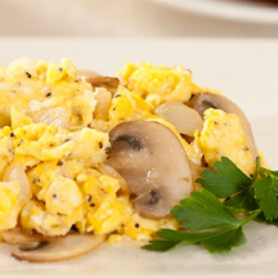

Fav Eggs

Description
I absolutely love eggs, from my head down to my legs.
This recipe is the perfect way to wake up in the morning.
I'm excited to share it with you and I hope that you like it!
Ingredients
- 3 Large Eggs
- 1 Slice Sharp Cheddar Cheese
- 1 Large White Mushroom
- 1 Tbsp Milk
- 1 Tbsp Butter
- Parmesean Cheese
- Salt, Pepper, Garlic Powder
Directions
- Whisk eggs and milk together in a bowl
- Break the cheese slice into small pieces
and chop the mushroom into pieces, then add to
the bowl of egg.
- Add a pinch of tsp of salt, pepper, and garlic powder to your mix.
- Apply the butter to a pre-heated frying pan over medium heat.
Spread evenly to create a non-stick surface.
- Add the eggs mix to the pan and monitor it closely.
As the underside of the egg begins to solify, begin to flip and
scramble the eggs until fully cooked.
- Serve on a plate and enjoy!